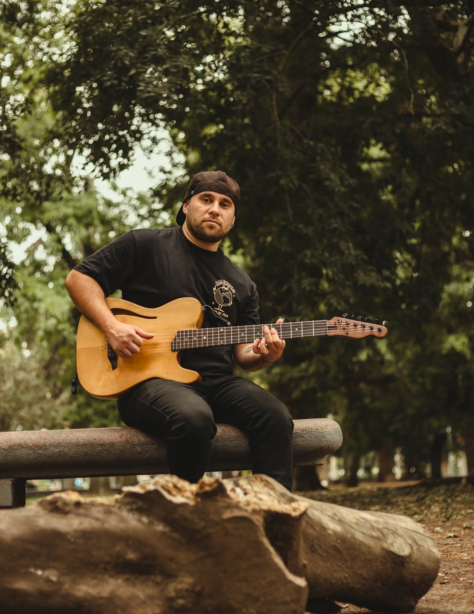
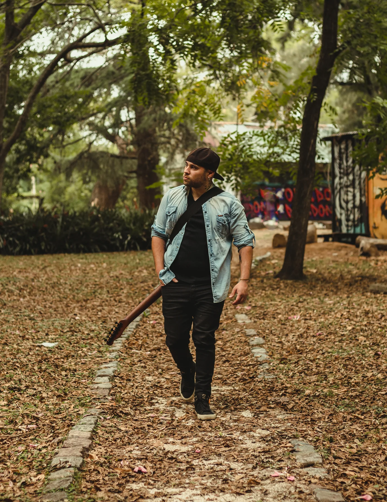
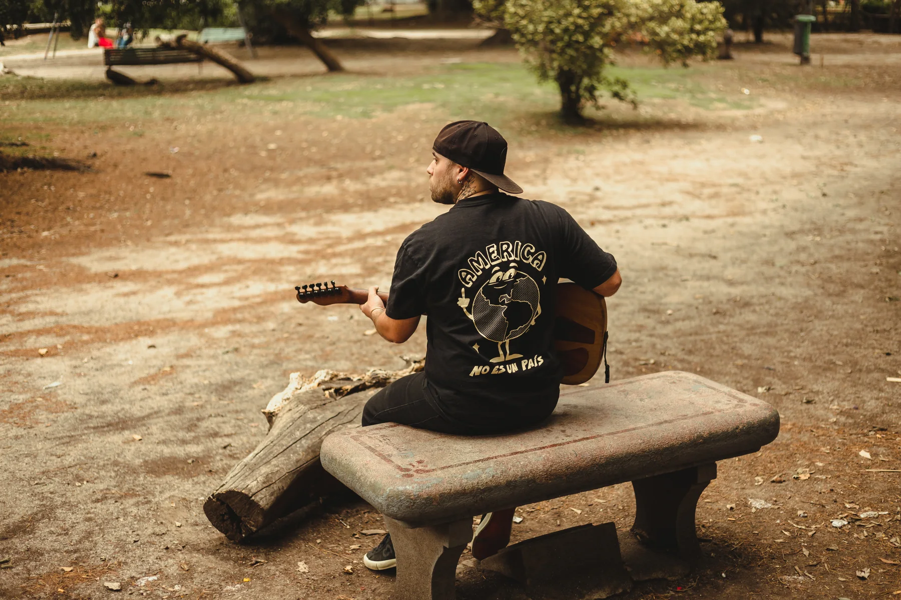

Zamba de mi esperanza
Electric version

La Plata · Argentina
Hago música, produzco canciones y grabo guitarras. El folklore es mi lugar de partida; la armonía, los arreglos y el estudio son parte del camino.
Proyecto artístico
Marquitos Folkis es el proyecto donde conviven el folklore, la canción y una búsqueda sonora que no necesita quedarse quieta.
Electric version
Marquitos Folkis
con Papacoca y Ana Rosa Herrera
Trabajo con otros artistas
Trabajo con músicos y proyectos que necesitan desarrollar una canción, encontrar una parte de guitarra o llevar una grabación a una versión final sólida.
Desarrollo de canciones, decisiones de arreglo, grabación y seguimiento del proceso hasta el resultado final.
Grabaciones remotas de guitarra criolla, acústica o eléctrica. Partes pensadas para la canción, no sólo pistas para llenar espacio.
Trabajo armónico y de guitarras, especialmente en folklore: nuevas voces, inversiones, texturas y maneras de acompañar.
Como parte del trabajo de estudio, para llevar la producción a una escucha final consistente y lista para publicar.
Trabajo seleccionado
Primer caso incorporado al portfolio. Esta sección va a crecer con nuevos trabajos, sesiones y material de proceso.
Escuchar en Spotify
Marquitos
Marcos Castillo es músico y productor de La Plata. El folklore es el lenguaje que más lo representa y también el lugar donde más disfruta trabajar como sesionista y arreglista.
Su forma de trabajar combina escucha, versatilidad y una atención especial a la armonía. En guitarra, una de sus herramientas principales es la rearmonización: encontrar otra manera de sostener una canción sin perder lo que la hace propia.
Marquitos Folkis es su proyecto artístico y el centro de esa búsqueda. El objetivo es simple: hacer cada vez más música, trabajar desde el estudio y construir una vida en la que pueda elegir más proyectos por interés que por necesidad.
Una identidad que aparece en los detalles
La relación con el folklore y la cultura latinoamericana no necesita convertirse en un slogan: está en el repertorio, los arreglos, las referencias y la manera de hacer música.
El estudio
El estudio está actualmente en proceso de mejora. La web no va a mostrar una foto de catálogo: cuando el espacio esté terminado, esta sección se actualizará con imágenes reales.
Mientras tanto, éste es parte del equipamiento que forma parte del flujo de trabajo actual.
Aston Origin · Samson C03 · Shure Beta 87A · AKG D5
Audient iD14 MkI · Behringer XR18
M-Audio BX5 D3 · auriculares Behringer / Sony · in-ear KZ ZS10
Criolla de luthier Richard Rolando, media caja / formato tipo Telecaster · Takamine EG124C electrocriolla · Sigma electroacústica · Yamaha Pacifica 112 modificada con pickups Wilkinson

Shows
Contrataciones para fechas, ciclos y espacios donde el folklore tenga lugar para encontrarse con una mirada propia.
ConsultarContacto
Para producciones, sesiones, trabajos de estudio o contrataciones de Marquitos Folkis.